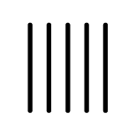
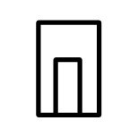

Sign
M247
Appears in 8 texts (8 uses), mostly on seals at Mohenjo-daro; usually sits inside a text. In the larger ICIT corpus its Wells equivalent W626 is in 8 texts.
Where it appears 8
Counts are distinct texts in the Mahadevan 1977 concordance (a text repeated on many moulded tablets counts once). 8 objects in all carry it.
| Object | Texts | Share |
|---|---|---|
| Seal | 8 | 100% |
| Site | Texts | Share |
|---|---|---|
| Mohenjo-daro | 5 | 62% |
| Harappa | 2 | 25% |
| Lothal | 1 | 12% |
| Where | Uses | Share |
|---|---|---|
| First sign | 1 | 12% |
| Inside | 7 | 88% |
| Last sign | 0 | 0% |
| Whole text | 0 | 0% |
Position counts use only texts with no damaged passage (8 uses).
In the ICIT corpus (Wells numbering)
W626: 8 distinct texts, 8 uses.
By object: seals 7, tablets 1. Top sites: Harappa 3, Mohenjo-daro 3, Lothal 1, Khirsara 1.
Variants
Wells (ICIT) equivalent: W626.
Probably the same sign (looks alike and is used alike):
 M193drawing similarity 0.67, context similarity 0.90
M193drawing similarity 0.67, context similarity 0.90
Looks alike but used differently (probably a separate sign):

M96drawing similarity 0.77, context similarity 0.59 M176drawing similarity 0.70, context similarity 0.16
M176drawing similarity 0.70, context similarity 0.16
M201drawing similarity 0.71, context similarity 0.46 M242drawing similarity 0.83, context similarity 0.08
M242drawing similarity 0.83, context similarity 0.08
Pairs from the prior project’s allograph model (image × distribution, signs with at least 8 uses).
Merged with other signs in alternative sign lists (used to test whether findings survive):
Neighbours and fixed pairs
Comes before
Signs read directly before or after it, counted in distinct texts, never across a line break or damage.
Published readings 1
Yajnadevam’s sound value
- Yajnadevam · 2024Did not hold
r
Yajnadevam 2024 ‘A cryptanalytic decipherment of the Indus script’; per-sign key from yajnadevam/lipi xlits.csv via sources/field-cady_indus_valley_script_corpus/xlits.csv · test record
Part of a 714-value sound key that scores no better than keys fitted to noise (atlas 1.1).
From proposals.json and CATALOGUE.csv. A claim is listed under every sign it names.
Project tests
Role in the text
- Positional class
- Medial (bootstrap stability 0.86) Grammar
- Functional reading
- TITLE ELEMENT 0.99; NOUN 0.01. Pre-jar title element? (unknown meaning). dev n=5 texts; initial 0.20 final 0.00; before jar 0.80 Functional reading
Role names such as opener or noun are labels for positions, not tested meanings.
Example texts 3
Text 1151 · Mohenjo-daro · seal · M17 M395 M99 M171 M59 M247 M342


Text 4013 · Harappa · seal · M72 M336 M89 M48 M247 M342
Text 7102 · Lothal · seal · M247 M267 M99 M186 M211
Signs in reading order, first sign on the left. Text numbers are Mahadevan’s (1977). / marks a line break, … a damaged passage.